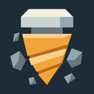
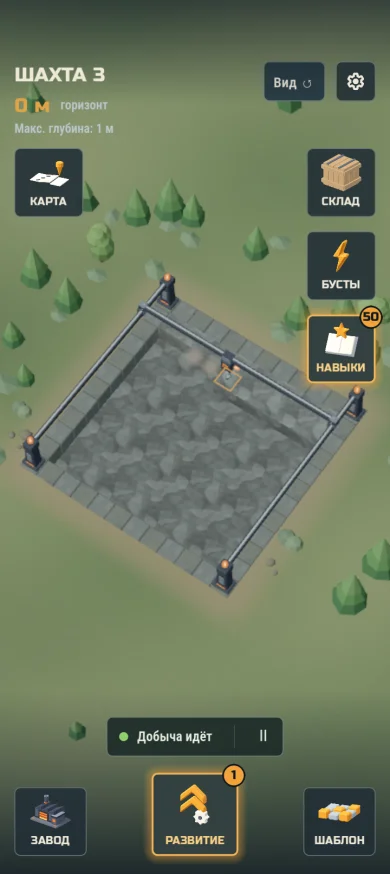

Oreline Idle
An industrial idle game for Android. Set a drilling pattern, send ore to the factory and choose which orders the machines fulfil next.
In development for RuStore.
Contact game support


I build Android apps and develop Oreline Idle.

An industrial idle game for Android. Set a drilling pattern, send ore to the factory and choose which orders the machines fulfil next.
In development for RuStore.
Contact game support
Since 2020 I have worked on Android apps. At MTS Digital I worked on personal finance features for the mobile banking app, in a team of two Android developers.
Kotlin, Java, RxJava, Dagger, Retrofit, Realm, Android Architecture Components.